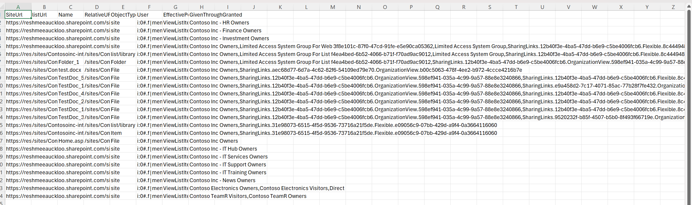

Retrieve Effective Permissions of End Users Across Sites
Summary
Managing permissions in SharePoint can be challenging, especially when users are granted access through various means such as direct permissions, shared links, SharePoint groups, or M365 groups. To simplify this process, you can use the effectivepermissions endpoint to retrieve and analyze permissions assigned to users at the site, list/library, and item/file/folder levels.

Prerequisites
The user account that runs the script must have SharePoint Online tenant administrator access.
Enter the values as prompted by the script and modify the filter
$m365Sites = Get-PnPTenantSite| Where-Object { $_.Url -like '*/sites/*' -and $_.Template -ne 'RedirectSite#0' }to target only sites you are interested in.
#Parameters
$tenantUrl = Read-Host -Prompt "Enter tenant URL";
$dateTime = (Get-Date).toString("dd-MM-yyyy-hh-ss")
$invocation = (Get-Variable MyInvocation).Value
$directorypath = Split-Path $invocation.MyCommand.Path
$fileName = "EffectivePermissionsReport-" + $dateTime + ".csv"
$ReportOutput = $directorypath + "\Logs\"+ $fileName
$userName = Read-Host -Prompt "Enter User Name";
#Connect to PnP Online
Connect-PnPOnline -Url $tenantUrl
$global:Results = @();
Function Extract-Guid ($inputString) {
$splitString = $inputString -split '\|'
return $splitString[2].TrimEnd('_o')
}
Function QueryUniquePermissionsByObject($_web,$_object,$_LoginName)
{
$roleAssignments = Get-PnPProperty -ClientObject $_object -Property RoleAssignments
$permissions =@();
foreach($roleAssign in $roleAssignments){
Get-PnPProperty -ClientObject $roleAssign -Property RoleDefinitionBindings,Member;
$PermissionLevels = $roleAssign.RoleDefinitionBindings | Select -ExpandProperty Name;
#Get all permission levels assigned (Excluding:Limited Access)
if($excludeLimitedAccess -eq $true){
$PermissionLevels = ($PermissionLevels | Where { $_ -ne "Limited Access"}) -join ","
}
$Users = Get-PnPProperty -ClientObject ($roleAssign.Member) -Property Users -ErrorAction SilentlyContinue
#Get Access type
$AccessType = $roleAssign.RoleDefinitionBindings.Name
$MemberType = $roleAssign.Member.GetType().Name;
#Get the Principal Type: User, SP Group, AD Group
$PermissionType = $roleAssign.Member.PrincipalType
If($PermissionLevels.Length -gt 0) {
$MemberType = $roleAssign.Member.GetType().Name;
#Sharing link is in the format SharingLinks.03012675-2057-4d1d-91e0-8e3b176edd94.OrganizationView.20d346d3-d359-453b-900c-633c1551ccaa
# c:0-.f|rolemanager|spo-grid-all-users/
If ($roleAssign.Member.Title -like "SharingLinks*")
{
If ($Users.count -gt 0)
{
$Users | where-object {$_.LoginName -eq $_LoginName -or $_.Title -match 'Everyone except external users|Everyone|All Users'} | foreach-object{
$permissions += New-Object PSObject -property $([ordered]@{
PermissionLevels = $AccessType
Type = $roleAssign.Member.Title
});
}
}
else {
$permissions += New-Object PSObject -property $([ordered]@{
PermissionLevels = $AccessType
Type = $roleAssign.Member.Title
});
# }
}
}
ElseIf($MemberType -eq "User")
{
$MemberName = $roleAssign.Member.Title;
$MemberLoginName = $roleAssign.Member.LoginName;
if($MemberType -eq "User" -and ($roleAssign.Member.LoginName -eq $_LoginName -or $_.Title -eq 'Everyone except external users'))
{
$ParentGroup = "Direct";
# (PermissionObject $_object $_Type $_RelativeUrl $_siteUrl $_siteTitle $_listTitle $MemberType $ParentGroup $MemberName $MemberLoginName $PermissionLevels);
$permissions += New-Object PSObject -property $([ordered]@{
PermissionLevels = $PermissionLevels -Join ","
Type= "Direct"
});
}
}
elseif($MemberType -eq "Group")
{}
if( $MemberType -eq "Group")
{
If($PermissionType -eq "SharePointGroup") {
#Get Group Members
$groupUsers = Get-PnPGroupMember -Identity $roleAssign.Member.LoginName
$groupUsers|foreach-object{
if ($_.LoginName.StartsWith("c:0o.c|federateddirectoryclaimprovider|") -and $_.LoginName.EndsWith("_0")) {
$guid = Extract-Guid $_.LoginName
Get-PnPMicrosoft365GroupOwners -Identity $guid |where-object {$_.LoginName -eq $_LoginName} |ForEach-Object {
$user = $_
$permissions += New-Object PSObject -property $([ordered]@{
PermissionLevels = $PermissionLevels -Join ","
Type= $roleAssign.Member.LoginName
});
}
}
elseif ($_.LoginName.StartsWith("c:0o.c|federateddirectoryclaimprovider|")) {
$guid = Extract-Guid $_.LoginName
Get-PnPMicrosoft365GroupMembers -Identity $guid | where-object {$_.LoginName -eq $_LoginName} |ForEach-Object {
$user = $_
$permissions += New-Object PSObject -property $([ordered]@{
PermissionLevels = $PermissionLevels -Join ","
Type= $roleAssign.Member.LoginName
});
}
}
if ($_.LoginName -eq $_LoginName -or $_.Title -match 'Everyone except external users|Everyone|All Users'){
$permissions += New-Object PSObject -property $([ordered]@{
PermissionLevels = $PermissionLevels -Join ","
Type= $roleAssign.Member.LoginName
});
}
}
}
}
}
}
return $permissions;
}
function GetUserEffectivePermissions($_ctx,$_object,$_userName,$_type,$_siteUrl,$_listUrl)
{
$user = get-pnpuser -Identity $_userName
# Retrieve the user permissions on the site
if($user){
$permissions = $_object.GetUserEffectivePermissions($user.LoginName)
$_ctx.ExecuteQuery()
#get all base permissions granted to the user
$PermissionKindObj= New-Object Microsoft.SharePoint.Client.PermissionKind
$PermissionKindType=$PermissionKindObj.getType()
$permissionsToExport = @()
ForEach ($PermissionKind in [System.Enum]::GetValues($PermissionKindType))
{
$hasPermisssion = $permissions.Value.Has($PermissionKind)
if ($hasPermisssion -and $permissionKind.ToString() -ne 'EmptyMask')
{
$permissionsToExport +=$permissionKind.ToString()
}
}
if($permissionsToExport){
$permissions= QueryUniquePermissionsByObject $_ctx.web $_object $user.LoginName
if($_type -eq "File")
{
$ObjectType = $item.FileSystemObjectType;
$Name = $Item.FieldValues["FileLeafRef"]
$RelativeURL = $Item.FieldValues["FileRef"]
}
else
{
$ObjectType = $_type;
$Name = "";
$RelativeURL = $_listUrl ??
$SiteUrl;
}
#find out how permissions have been granted - direct, group , sharing links
$result = New-Object PSObject -property $([ordered]@{
SiteUrl = $_siteURL
listUrl = $_listUrl
Name = $Name
RelativeURL = $RelativeURL
ObjectType = $ObjectType
User = $User.LoginName
EffectivePermissions = ($permissionsToExport -join ",")
GivenThroughGranted = ($permissions | foreach-object{ $_.type}) -join ','
})
$global:Results +=$result;
}
}
}
#Exclude certain libraries
$ExcludedLists = @("Form Templates", "Preservation Hold Library", "Site Assets", "Images", "Pages", "Settings", "Videos","Timesheet"
"Site Collection Documents", "Site Collection Images", "Style Library", "AppPages", "Apps for SharePoint", "Apps for Office")
$m365Sites = Get-PnPTenantSite| Where-Object { $_.Url -like '*/sites/*' -and $_.Template -ne 'RedirectSite#0' }
#$m365Sites = Get-PnPTenantSite -Detailed | Where-Object {($_.Url -like '*Comm*') -and $_.Template -ne 'RedirectSite#0' }
$m365Sites | ForEach-Object {
$siteUrl = $_.Url;
Connect-PnPOnline -Url $siteUrl
$ctx = Get-PnPContext
$web= Get-PnPWeb
Write-Host "Processing site $siteUrl" -Foregroundcolor "Red";
GetUserEffectivePermissions $ctx $web $userName "site" $siteUrl "";
$ll = Get-PnPList -Includes BaseType, Hidden, Title,HasUniqueRoleAssignments,RootFolder | Where-Object {$_.Hidden -eq $False -and $_.Title -notin $ExcludedLists } #$_.BaseType -eq "DocumentLibrary"
Write-Host "Number of lists $($ll.Count)";
foreach($list in $ll)
{
$listUrl = $list.RootFolder.ServerRelativeUrl;
#Get all list items in batches
$ListItems = Get-PnPListItem -List $list -PageSize 2000
if($list.HasUniqueRoleAssignments)
{
GetUserEffectivePermissions $ctx $list $userName "list/library" $siteUrl $listUrl;
}
#Iterate through each list item
ForEach($item in $ListItems)
{
$ItemCount = $ListItems.Count
#Check if the Item has unique permissions
$HasUniquePermissions = Get-PnPProperty -ClientObject $Item -Property "HasUniqueRoleAssignments"
If($HasUniquePermissions)
{
#Get Shared Links
if($list.BaseType -eq "DocumentLibrary")
{
$type= "File";
}
else
{
$type= "Item";
}
GetUserEffectivePermissions $ctx $item $userName $type $siteUrl $listUrl;
}
}
}
}
$global:Results | Export-CSV $ReportOutput -NoTypeInformation
Write-host -f Green "Effective Permissions for user generated Successfully!"
Note
SharePoint admin rights are required to run the script
Check out the PnP PowerShell to learn more at: https://aka.ms/pnp/powershell
The way you login into PnP PowerShell has changed please read PnP Management Shell EntraID app is deleted : what should I do ?
Source Credit
Sample first appeared on Retrieve Effective Permissions of an user within SharePoint Sites Using PowerShell
Contributors
| Author(s) |
|---|
| Reshmee Auckloo |
Disclaimer
THESE SAMPLES ARE PROVIDED AS IS WITHOUT WARRANTY OF ANY KIND, EITHER EXPRESS OR IMPLIED, INCLUDING ANY IMPLIED WARRANTIES OF FITNESS FOR A PARTICULAR PURPOSE, MERCHANTABILITY, OR NON-INFRINGEMENT.